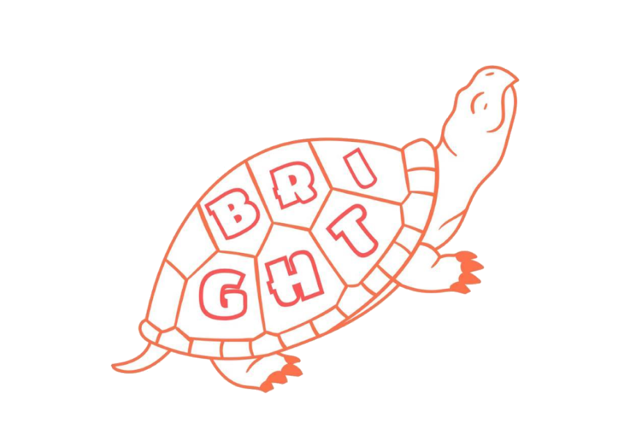

National-license holders support you from the root with painful neck and lower-back trouble.
Leave the dealings with the insurance company and questions about compensation to us, too.


Leave those worries to Bright Seitai.
For injuries from a traffic accident,
Because care for injuries from a traffic accident is covered by JIBAISEKI (compulsory auto insurance), the cost for you as the injured party is, as a rule, ¥0. You can focus with peace of mind on the care you need.
With the same care that pro athletes rely on, we support you from the root, even for accident injuries.
Care after a traffic accident is covered by JIBAISEKI insurance. Please rest easy about the cost, too.
Because JIBAISEKI insurance applies, you as the injured party pay nothing out-of-pocket, as a rule.
Under the JIBAISEKI standard, the amount is calculated as "¥4,300 × 2 × actual visit days," so the rough guide is effectively ¥8,600 per visit day. (A condition applies that caps this by the number of days in the treatment period.)
Using the JIBAISEKI standard, you can instantly estimate the visit compensation you may receive.
※ This calculator gives a rough estimate based on the JIBAISEKI standard (¥4,300 per day). The actual amount is calculated by multiplying ¥4,300 by the smaller of "actual visit days × 2" and "the number of days in the treatment period," and it varies with your condition and circumstances. Amounts may differ under the voluntary-insurance standard or the attorney standard. For an accurate figure, please feel free to consult us.
Injuries from a traffic accident differ in both cause and care depending on the symptom.
Tap a symptom that concerns you to read a detailed page on its causes, the treatment, and insurance questions.
Depending on the type of accident, the fault ratio, how insurance is used, and the injuries that tend to occur all change.
Choose the case closest to your accident to learn everything from the response flow to compensation and care.
 Rear-end collisionLearn more ›
Rear-end collisionLearn more ›
 Intersection accidentLearn more ›
Intersection accidentLearn more ›
 Multi-vehicle pile-upLearn more ›
Multi-vehicle pile-upLearn more ›
 Parking-lot accidentLearn more ›
Parking-lot accidentLearn more ›
 Bicycle accidentLearn more ›
Bicycle accidentLearn more ›
 Moped & motorcycle accidentLearn more ›
Moped & motorcycle accidentLearn more ›
 Pedestrian accidentLearn more ›
Pedestrian accidentLearn more ›
 Accident with a child aboardLearn more ›
Accident with a child aboardLearn more ›
 Accident during pregnancyLearn more ›
Accident during pregnancyLearn more ›
Thorough support that only a traffic-accident specialist can provide.
With JIBAISEKI insurance, your session cost as the injured party is, as a rule, ¥0. You can visit with peace of mind.
With gentle manual therapy, we provide made-to-order sessions tailored to each person.
Feel free to consult us about transferring from your current hospital or clinic, or visiting us alongside a hospital.
Staff holding the national judo-therapist license attend to each person with care.
Reception for those with traffic-accident injuries is open until 20:00, so you can visit comfortably even on your way home from work.
On weekdays we stay open straight through until 20:00 — convenient hours for visiting on your way home from work.
Two free parking spaces in front of the clinic. Arriving by car is smooth and easy.

Start by reaching out — anytime
First-timers can relax. Our staff will guide you gently.

By LINE or phone. Feel free to tell us about the accident, too.

We hear in detail about the accident and how your body feels.

We check the cause of the pain and clearly explain our care plan.

National-license holders provide careful sessions tailored to each person.

We firmly support you with insurance-company contact and any worries about your visits.
Staff holding national licenses welcome you with a smile.


Licensed judo therapist and sports trainer with 10 years of experience. As the dad of a 1-year-old daughter, he warmly welcomes those visiting with children. Please feel free to reach out about even the smallest symptom.
A bright, clean interior with a kids' space, too. You can visit with peace of mind even with children.


We share sessions and self-care tips in video form.
No rushing — at your own pace. We walk alongside you all the way to recovery.
Yes. Because care for injuries from a traffic accident is covered by JIBAISEKI insurance, your out-of-pocket cost as the injured party is, as a rule, ¥0. Unlike using health insurance, it also qualifies toward compensation. Please feel free to consult us for details.
Yes. You can transfer to Bright Seitai from the hospital or clinic you currently attend, and you can also combine visits to a hospital with visits to us. We support the paperwork too, so please rest easy.
Yes, we recommend coming in early. With whiplash and the like, pain often does not appear right after the accident and shows up a few days later. Starting to check and treat your condition early is important for helping prevent lingering effects.
It varies with the symptom, but in the early stage, visiting without long gaps — such as 3 to 4 times a week — helps recovery go smoothly. We suggest the ideal visit pace to match each person's condition.
Under JIBAISEKI insurance, compensation is paid according to factors such as the number of visit days. It is important to attend properly and keep records. We support appropriate visits, and you can check a rough estimate with the calculator above.
We are fully by appointment. Booking via LINE or phone (052-655-5610) is the smoothest way. Reception for those with traffic-accident injuries is open until 20:00.
From insurance paperwork to caring for your body, we are your single point of contact for it all.
| Clinic name | Yuki Sekkotsuin / Bright Seitai (有輝接骨院／Bright整体) |
|---|---|
| Address | 〒455-0054 Heights Meiyon 1F, 1-7-7 Tochikacho, Minato-ku, Nagoya, Aichi |
| Phone | 052-655-5610 |
| Getting here | Turn from National Route 41 onto Prefectural Route 451, and it's immediately on the left |
| Parking | 2 spaces in front of the clinic |
| Reception hours |
Weekdays 9:00–20:00 (last booking 19:30) Sat 9:00–17:00 (last reception) Traffic-accident consultations welcome anytime during reception hours |
| Closed | Tuesdays, Sundays & public holidays |

For anything about traffic accidents or whiplash, turn to Bright Seitai.
We offer free consultation by LINE and phone.